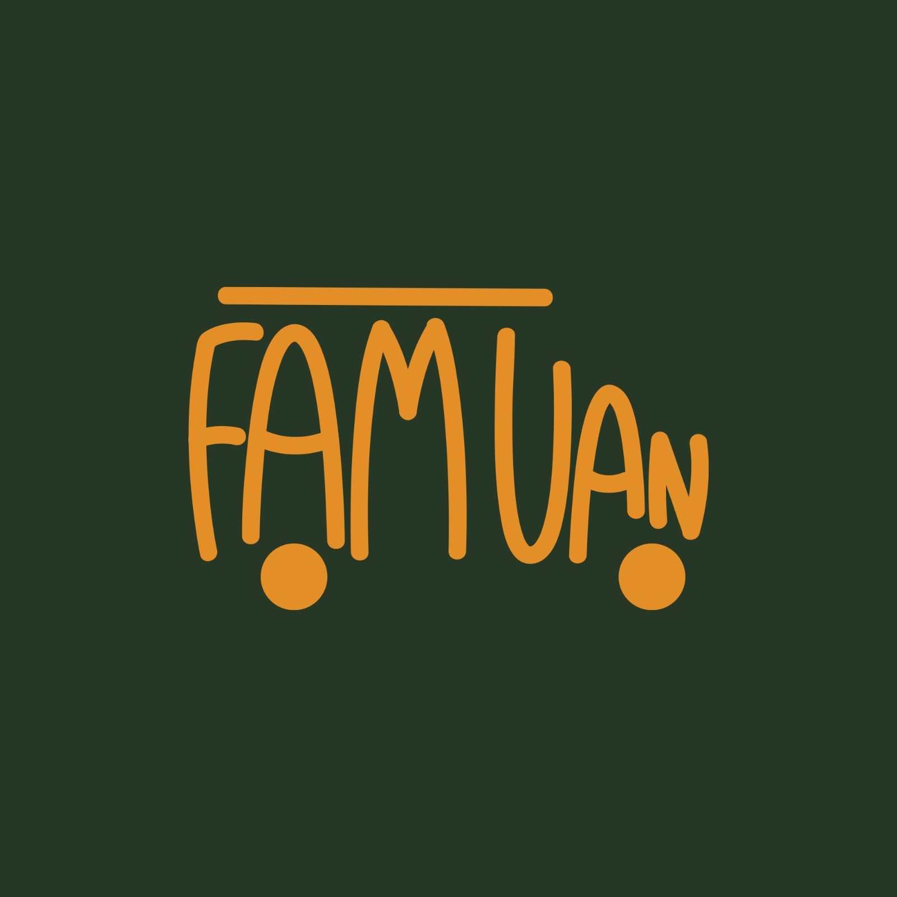

General
This branded website is publicly available at FaminVan Website
This website was created by:
- Eva Petricheva 220267)
- Polina Peteva (220850)
- Oleksandra Novikova(225863)
- Pleun de Nijs (214467)
Content
The first idea we had after receiving our assignment and our target audience was to create an event platform that gives ideas about camper van trips – route, location, dates, tips, and people can sign up to go together – in this way we connect them and can include the problems” After progressing on our interviews with our target audience, we realised that there are already a lot of similar ideas to our first concept and camper van owners prefer to travel more flexibly and spontaneously so they also don’t put so much effort into planning. An interesting insight we want to work with is that “If the kids are happy, we are happy” as well as “Kids nowadays just want their phones, tablets, and camper van spots with Wi-Fi”. That’s why we decided to create a platform with “on-the-road activities”.
Our vision
In a hostile world where people are too consumed with their job careers and lose focus on the warmth of home, we believe that if we would only put the same effort into bonding with our loved ones and sharing adventures, we would experience the family magic. again.
Family, Comfort, Togetherness, and Coziness.
Persona:
Meet Jaap!
Jaap is a 39-year-old banker who is married and has two kids, 8 and 10 years old. Jaap is very adventurous and sporty, always trying to share this passion with his family. That is why a camper van is the perfect vehicle for him. Because he is so active and adventurous, he finds having a daily routine uninspiring and craves variety and excitement in his day-to-day activities, but at the same time, it is a comfortable way for all his family to travel together. When he and his family go on a trip with it, they usually don’t stay somewhere for longer than 3 days because he likes to be on the road and explore as many places as possible. He enjoys the time on the road because the whole family sings along with the radio and they make up fun games to do together in the camper van. Jaap also loves to hike and do photography at his destinations. He likes to share a selection of his nicest photos from his camper van trips on Instagram in a slideshow because he enjoys sharing his adventures with his friends, family, and colleagues. He also likes to share all the places that he discovers for his job. He uses Instagram for this because he thinks this is the easiest way to share it with everyone at one time and he likes to have all his nice pictures in one place. Jaap is also a real bon vivant. He loves good food, wines, and beers. This is something he is very enthusiastic about while being in different countries. That’s why he loves to try all the different supermarkets in other countries when he travels. He is an extrovert who gets energy from being around friends and family, so when he is not working during the weekends, he loves to invite friends. On these days, he likes to cook for them and spend long nights talking, preferably with a good glass of wine or beer. Jaap finds it frustrating when his children are on their phones all day. He thinks it is important that they occasionally play a game together or play outside. He also finds it annoying if his family prefers to stay in one place for many days. He enjoys being on the road and exploring a lot of destinations. He wants to take advantage of the four weeks that the summer camper vacation normally lasts for.
Brand Name: FamVan
Our brand is about camper van users who travel with their family. To make clear what our brand is about we decided to use fam (from family) and van (from camper van) in our name.
Brand Logo:
Our logo is inspired by a camper van. We created a round looking typography to make our logo cozier and family related. The dark green background is inspired by nature and the orange color of the logo is inspired by the warmth of family and safety.
Visual Identity:
 For the colour scheme of FamVan we used the following colors:
For the colour scheme of FamVan we used the following colors:
- #EEE4CF
- This off-white colour is the first one in our colour palette. We used this colour for some of our text because it really stands out in contrast to the other colours we use for our website. This makes our website more comfortable to use because the text is easier to read. We want our brand to feel cozy, and this colour fits that description because this white colour has warmth in it.
- #757B33
- We choose this olive-green colour because green is a colour that can appeal to a lot of people. Therefore, if we use this colour, there is a good chance that every member of the family that views our website will find it appealing. This olive-green colour can also be connected to the outdoors, which makes it a good fit with our brand. People who love spending time in nature may connect with this colour.
- #273726
- We also choose this darker forest green colour for our colour scheme. We think this is again a good fit for our brand because of the connection with nature and being outside. The colour is dark, which means it can provide a lot of contrast and it makes the look of our website less flat.
- #E38E26
- This shade of orange is one of our main colours because it gives warmth. This is important to us because we connect warmth with our values, family, comfort, togetherness and coziness. The colour can create joy, positivity and it makes us think about sunsets or campfires. We also think that orange is a very friendly colour which can appeal to parents and children.
- #EB6425
- The last colour in our colour scheme is this bright shade of orange. We choose this colour mostly because of the same reasons as our other orange shade because of its warmth and coziness but this one is a bit bolder. We think this is a great colour for accents to make our website a bit livelier. The colour is exciting, and we think that it can be especially appealing for the children.
Pacifico Regular
Montserrat Regular
Copywriting:
While writing our texts, we were taking into account brand values, vision, and insights that we gathered from problem interviews. You can see our text on the website.
Supporting visuals:
For our visuals, we've tried to look for images that represent a cozy family vibe and can help convey our message to target audiences. Examples of these visuals can be seen used on our social media and landing page.
Production
Design Elements & justifications
-
For the colour scheme of FamVan we used the following colors:
- #EEE4CF
- This off-white colour is the first one in our colour palette. We used this colour for some of our text because it really stands out in contrast to the other colours we use for our website. This makes our website more comfortable to use because the text is easier to read. We want our brand to feel cozy, and this colour fits that description because this white colour has warmth in it.
- #757B33
- We choose this olive-green colour because green is a colour that can appeal to a lot of people. Therefore, if we use this colour, there is a good chance that every member of the family that views our website will find it appealing. This olive-green colour can also be connected to the outdoors, which makes it a good fit with our brand. People who love spending time in nature may connect with this colour.
- #273726
- We also choose this darker forest green colour for our colour scheme. We think this is again a good fit for our brand because of the connection with nature and being outside. The colour is dark, which means it can provide a lot of contrast and it makes the look of our website less flat.
- #E38E26
- This shade of orange is one of our main colours because it gives warmth. This is important to us because we connect warmth with our values, family, comfort, togetherness and coziness. The colour can create joy, positivity and it makes us think about sunsets or campfires. We also think that orange is a very friendly colour which can appeal to parents and children.
- #EB6425
- The last colour in our colour scheme is this bright shade of orange. We choose this colour mostly because of the same reasons as our other orange shade because of its warmth and coziness but this one is a bit bolder. We think this is a great colour for accents to make our website a bit livelier. The colour is exciting, and we think that it can be especially appealing for the children.
- Font choices
- We choose 2 fonts for our brand. Since our brand is for families with younger children and the website is about games, films, and music, we wanted our fonts to be playful. That is why we used Pacifico Regular for our titles. The joyful and friendly font type of the handwritten style adds approachability to our brand. Our intention is for the font to create a sense of relaxation among users.
- For our regular text and subheadings we used Montserrat Regular. This font is readable on screens which we think is very important for our text. Even though that it is a formal font it feels less formal than other fonts like, Times New Roman, Calibri or Futura. As a result, we maintain the playful mood we aim for.
- User interface patterns and the structure of the navigation and content To make sure the website reflects on our brand identity and values, we have made numerous design decisions, all of these are listed out page by page in the text below.
- HTML template buas-media-interactive/prj4-group-template
- The source code for UX patterns other than the ones provided by the “Bootstrap” library (see getbootstrap.com/docs for a list of such patterns)
- Images that were not produced by students themselves, including when crediting is not mandatory (in other words, we ask you to credit Unsplash images)
- List your top 3 problems you solve for your target group(s).
- Describe briefly how the problems are solved now (existing alternatives).
- Outline the brand solution(s) you have for the above problem(s).
- List your target customers and/or users.
- Describe briefly the characteristics of your ideal customer (early adopter, brand persona).
- With a single, clear compelling message, state why your brand idea is different and worth paying attention to.
- List the aspect(s) of your brand that cannot easily be copied, also called your sustainable competitive advantage(s).
- List your main path to customers.
- How do you reach them? What channel(s) do you use.
- List the key numbers that tell you how your brand experience is doing.
- For example amount of users, downloads, visitors, subscriptions, sales etc. Numbers you are able to measure.
- List your sources of revenue: describe the revenue model and the (different) revenue stream(s).
- List your main costs: define the fixed and variable costs.
- Calculate the cost per unit.
- State what your product and/or service is and how this contributes to your unique value proposition.
- Clarify the fit between the product/service developed and the brand identity/brand image.
Our brand is about camper van users who travel with their family. To make clear what our brand is about we decided to use fam (from family) and van (from camper van) in our name. Our logo is inspired by a camper van. We created a round looking typography to make our logo cozier and family related. The dark green background is inspired by nature and the orange color of the logo is inspired by the warmth of family and safety.
Pacifico Regular
Montserrat Regular
The font Montserrat Regular is used for the menu and navigation to support readability and easy navigation through the pages. For the desktop version the navigation bar is located in the left corner. For the mobile version a dropdown menu is used in the right corner of the website.
This menu contains 5 pages, the home page, the movies page, the playlist page, the games page, and our about page.
On all category pages the same styles for titles, spacing and category headings are being used, in order to convey consistency, establish hierarchy and coherence with our style guide.
The buttons and the card games on the website have a round shape, just like our font. The roundness of these elements corresponds to the friendly identity that we want to show in our overall design.
The home page
The first thing shown on our landing page is the text “Welcome to all camper van families!” In this way we immediately try to address our target group and it is immediately visible for whom this platform is intended. Below this text we go into a bit more detail about what we as a brand have to offer the user. The text is shown in front of a picture of mountains and a little part of a camper van. We chose this picture so the user can get a sense of our brand's mood without having to read anything. This image is covered with a colour layer of the green colour from our colour palette so that the image fits to our visual identity, and in order to make the text stand out more.
If the user scrolls down, our three categories—movies, games, and playlists—appear. To represent our style, we have opted to display each category as an illustration in a scrapbook style. To make use of the space we have on the screen we made the illustrations on the desktop screen next to each other and on the mobile version we decided to put the illustration with their text below each other. Below these drawings, a painted landscape is displayed. The use of a cut-out image, which gives the impression that it has been glued to the page's paper background, was an intentional decision to contain our visual identity with the scrapbook style.
The user can reach our vision and values by scrolling down farther. We primarily chose the color orange for this section of the page because we believe that the warmth of the colour best portrays the values of family, comfort, togetherness, and coziness. To continue the scrapbook style, Polaroids have been used that show images related to our brand. To again make use of the space on the screen we made the Polaroid on the desktop screen next to the text and on the mobile version we decided to put the Polaroid below the text.
The two phones further down the home screen display the FamVan Instagram and Facebook pages. This method of sharing our social media is incredibly user-friendly because it is displayed visually and allows the user to access the social media account with just a single click on one of the phones.
In the bottom of this page the user can find the footer with the logos of FamVan’s collaborators. The logos can remind the user of stamps due to their more pastel shade of colour. We did this to keep the scrapbook style consistent everywhere on our website.
The movie page
In the movie page we included 12 movies, separated in 3 categories - Family Movies, Animated Favourites and Holiday Specials. In this way we believe that we would have movies that would appeal to different ages and preferences, while keeping them children friendly. As we wanted to have the website fully functional, we linked the movies to the streaming platforms Netflix and Disney+. Subscriptions to both platforms are common for the average Dutch household, and by mixing them we ensure that even if a family doesn’t have one out of the two, they have access to other movies to enjoy on the road.
We used a grid of images, structured in the 3 different categories. In order to make the page clearer and user-friendly, we decide to use a grid.
As for the background of our pages we are using a paper texture, we chose to represent the movies through their posters, reminding of photos stuck on paper. In this way, we aimed to maintain our “scrapbook” visual identity, which can be noticed throughout the whole promotional campaign and landing page of the website.
A button is connected to each poster, linking the user to a streaming platform where they can access the desired content
Styles classes are used to overwrite the bootstrap default colours, so they correspond with our visual identity.
The playlists page
We included 18 playlists separated in 6 categories – Road Trip, Sunset Serenade, Spring Days, Disney Songs, Lazy Day Retreat, and Campfire. Our categories aim to attract listeners based on their mood, surroundings or season. As we are already using 2 streaming platforms requiring subscription, we decided to keep them to the minimum and provided our users with YouTube playlists, as they can enjoy them free of charge.
The information on this page is visually represented through carousels, divided in six categories with 3 items each. By clicking on one of the playlists in the carousel the music will immediately play. The carousels are displayed among each other to maintain order and avoid clutter.
The games page
We included 6 games separated in 2 categories - Two Players – games that are meant as a competition between the players, and Multi Player - games that are not a competition but an activity for all members. While we were brainstorming the games’ properties displayed on the website, we were guided by the user insight: “I would like a platform that doesn’t make me spend time on my device and I end up online rather than enjoying time with my family in the present moment”. That’s why we ended up writing our game descriptions only as instructions, which the users can have as guidance, while the actual games take place in real life.
For this page we used cards, structured in a grid based on their category; the bootstrap element “cards” provides us with a layout which is both visual and informative;
In order to make full use of the page, the cards are displayed in grids on the desktop version; however, on the mobile version, the cards are arranged one below the other, making it not too difficult to read the text on the cards.
The short engaging description and corresponding imagery aims to retain the attention of the user and keep them engaged without overloading them with information. In this way we maintain our approachable identity, making the interface user-friendly for all ages.
After clicking on a card’s button, a scrollable modal appears on the user’s screen where they get instructed on how to conduct the games;
On the bottom of the page a carousel displays the promoted games of the week – they are strategic partnerships through which our platform provides promotion to local products, and we gain revenues;
In order to create hierarchy and differentiate the games available on the website, with the ones promoted we chose to use a different bootstrap element – carousel instead of cards;
Styles classes are used to overwrite the bootstrap default colours, so they correspond with our visual identity;
On the movie page we decided to go for a grid. We chose this because you can see a several films at once which makes the page . This makes this page clear and easy to use.
Credits
Please provide links and/or credits for third-party elements including:
Testing Report
Tesing report 1:
Testing Goal: Does our target audience actually find a website with film, music, and game suggestions help improve bonding with their kids better on a road trip?
Testing Methods:
Participant: Meriam, 39 years old, mother of a 10-year-old boy, Marie. This summer, she went on a trip with her son in a camper van.
Settings: Meriam’s house
Testing Results:
Positive Aspects:
Nice design; colors evoke strong association with the brand. The logo featuring a camper van is recognizable. From Miriam's perspective, the website can genuinely assist her in solving the issue of her children getting bored on road trips and help strengthen their bond.
Negative Aspects:
Miriam mentioned that for her, it's easier to search for films directly on Netflix or Disney than on our platform.
She also highlighted the need to find the best music for road trips and singing together.
Furthermore, she pointed out that the links on the playlist website do not work correctly.
Here a few of my experties that I feel like can be helpfull for this job:
Back in Ukraine was managing my own public organisation – that was a comunity of board games lovers, I was helping poeple to get toghter and orginising big turnaments in my hometown. So I would say I do know quite a lot about working with young people and making even people who I just met feel comfurtable.
Curantly I am working already for 1,5 year as social media manager for resturant in breda so I`ve learned a lot about content creation that I belive can me usfull for this job. Beside that I all in all plan little marketing campegns and interview people at the events.
Finally back in Ukraine I was working in the orginistaion that help people to find university abroad so I do know about all the strugeles of choosing your study pass from differe t perspectives and how to help people hendel that
Testing report 2:
Testing Goal: Find out whether the website is intuitive to navigate through, the content matches the user’s expectations, and the overall visual identity corresponds with our vision and values.
Testing Methods:
Participant: Tsvetelin, 35 years old, father of two children.
Settings: Online
Test protocol:
The participant was given 2 main objectives. First objective is to find the movies category and choose a movie from there. Second objective: go to the games category, pick one of the games and go through the rules and the description of the game.
Testing Results:
Positive Aspects:
He really liked the design and matches our brand voice. From the landing page he could recognize what our website is about. For the playlist section he liked the categories and he would such music while traveling for spring mood for example. For the movies categories he liked the categories as well but would add more. Despite some technical issues and areas for improvement, the interviewee generally had a positive impression of the website's layout, content, and functionality, particularly appreciating aspects like the visualizations of playlists, films, and games.
Negative Aspects:
He found it difficult to play the playlists from phone and found it annoying because he couldn't stop one of the playlists and the other one started. For the movie section he suggests that if we have more categories with movies then its nicer if we make a carousel and people can scroll and see better the movies.
From the landing page at the beginning where it says "welcome to all camper van families" he said that the main text was not readable and also the Montserrat font that we used was also not readable, he needed time to read it.
Switching to phone version, at the landing page for the values, the text only, he said that feels like something is missing from a static standpoint. Another point for the movies section is that we should think of different ways to do them because after we add more and more, it's going to be harder to scroll through every single one of them.
Testing Report 3:
Testing Goal: Find out whether the website is intuitive to navigate through, the content matches the user’s expectations, and the overall visual identity corresponds with our vision and values.
Testing Methods:
Participant: Julian, 46 years old, father of 2 children, seasonal camper van traveler
Settings: Julian’s office
Test protocol:
The participant was given 2 main objectives. On desktop first version – Go to the movies category and look through the category Animated Movies. On mobile first – Go to the Two Players game category and read the description of the Alphabet Game.
During the interview, Julian was being asked additional questions to gather deeper insights about the overall website structure and tone of voice leaves. The audio of the interview was recorded, after given consent.
Testing Results:
Positive Aspects:
Julian finds the website visually appealing with diverse graphics and friendly, approachable tone of voice. The colors used are associated with the great outdoors and the design has an eco-friendly look.
He finds the variety of content well-organized, balanced in quality and believes that more may cause confusion in the user as well as more difficult navigation. So far it is straight forward and matches his expectations.
Regarding the movies, he believes that there is something to enjoy for everyone’s taste, a good combination of both older and newer titles, he would gladly watch with his children!
Negative Aspects:
Julian finds the navigation on the mobile a bit unclear and would prefer to be able to see the names of the categories rather than having them stacked in a burger menu.
He finds the concept of linking movies to streaming platforms not so optimal, as a lot of users may not have subscriptions, therefore making them unable to use the category at all.
He misses a community aspect of the website – a forum where users can leave their personal recommendations about games, and opinions on the ones shown on the website.
Testing Report 4:
Testing Goal: Find out whether the website is intuitive to navigate through, the content matches the user’s expectations, and the overall visual identity corresponds with our vision and values.
Testing Methods:
Participant: Cecile, 35 years old, seasonal camper van traveler.
Settings: Cecile’s living room.
Test protocol:
The participant was given 3 main objectives. The first objective was to choose the movies category and find a movie to watch. The second one was to go to the games page and read the instructions of a game of her preference. The final objective was to play a something from the playlist page.
Cecile did these objectives on the desktop version of FamVan and on the mobile version of the website.
During the interview, Cecile was being asked additional questions to gather deeper insights into the overall website structure and tone of voice leaves. The audio of the interview was recorded, after given consent.
Testing Results:
Positive Aspects:
Cecile’s first look off our home page gave her directly a good idea of what our brand is about. She really liked the orange and green colors that we chose, and she thinks they fit with the overall look of our website and brand identity. She also noticed the scrapbook style of our website.
She doesn’t have problems with navigation through the website. Every objective I presented to her was very easy for her to find. The way the different category pages looked and were displayed was also very user-friendly in her opinion. Also, the mobile navigation though the website was super easy for her and very clear.
Cecile is pleased with our website's categories and their functionality. She was drawn to the karaoke element on the games page in particular. She enjoys the fact that further information can be accessed by clicking on each game's card. She thinks it would be too overwhelming if all the information was on the page right under the game, which is why it's great that we developed a button for it. She enjoys the karaoke game's various challenges a lot.
For the movies page she thinks that it is a good function that you can watch the films via Netflix and Disney+.
Negative Aspects:
Cecile misses the option to click on the category illustrations on the home page. She imideatly tried to click on them but they didn’t work. In her opinion this is a good thing to add to the website to make it even more user-friendly.
The second negative aspect for her is that a lot of the images were a bit too big for her taste. Especially the movies on the movies page, the phones in the bottom of the home page, and the category illustrations would she prefer to see smaller.
Marketing
Context of campaign and promotional activities
Our marketing campaign aims to promote FamVan - a camper van entertainment brand. Our target audience are 35-50-year-olds living in the Netherlands, particularly couples with children who are adventurous, active, and prefer cozy simple moments over luxury.
The message of the campaign centres around the idea of family bonding and adventure, stimulating quality family time and making the journey more enjoyable for everyone. In addition, the campaign highlights the key place of games, movie and playlists while travelling to keep children entertained and engaged during the trip. A key point of our campaign was that we never mentioned directly the website which was in the making, or the brand’s vision and values. We didn’t want to attract audience around a product, but rather around a lifestyle. That’s why we did our best to communicate them indirectly through our tone of voice and style guide – conveying comfort, coziness and following visually a scrapbook style of designing.
The promotional activities executed included daily posting of predominantly reels and fewer posts on Instagram including destination spotlights, travel tips, entertainment checklists and daily interactive stories, all while trying to follow current social media trends. Content was shared on Facebook as well, where we had active participation in relevant Facebook groups, aiming to generate organic reach. The overall campaign aimed to reach 100 users on both Instagram and Facebook, gain 100 followers on each platform, and increase audience engagement and page followers.
Final Content Breakdown:
Instagram:
17 reels
8 photo posts (out of which 1 collaboration)
53 stories
Facebook:
12 shorts
7 photo posts
1 text post
1 event
Target group analysis
Our target group are people between 35 and 50 years old who live in the Netherlands. They are married or in a committed relationship and they have children. They have an upper-class income around 142.6 thousand euros per year.
They enjoy going on family holidays during the summer with a camper van. Additionally, our audience frequently leads a flexible, open-minded, and adventurous lifestyle and values adventure over luxury. They enjoy participating in outdoor activities, such as hiking, biking, swimming, and making campfires. They also like to travel to new destinations to get to know new cultures, food, and nature. This is important for them, and they think that this is a great part of their children's upbringing. Family time and sharing experiences together is a top priority for our target group. They seek to stronger bonds and create lasting memories with their partner and children.
Media Tactics
We decided to promote our brand with Instagram because it’s one of the most used social media platforms at this moment with 2 billion monthly users (Zote, 2024). Businesses of all sizes and in all industries are able to succeed on Instagram because the platform offers an enormous user base with a wide range of needs and interests. Through Instagram we will be able to connect with our target audience and create brand awareness. We will do this by being active on our account through posting every day on feed. We will post mainly reels to make it a bit more entertaining and to get more attention because reels are easily accessible for everyone to see even if they don’t follow our account.
One of the most popular social media platforms worldwide is Facebook. The visibility of your business can help to attract new users. This is why we decided to also use this platform for our social media campaign (NI Business Info, n.d.). 4.198.359 people (or 32,1% from all users) between 35 – 50 uses Facebook in the Netherlands (Facebook Users in Netherlands - February 2023, 2023). This means that numerous people within our target audience may be able to discover our brand on Facebook. In addition, it's a media network where users regularly share photos from vacations, family-friendly adventures, and their kids. This perfectly aligns with the values of those we are targeting, who value family time highly. Facebook also offers groups that promote connection and community building, which makes it an excellent platform for our company. This enables our brand to join organizations where members of your target market gather to talk about their experience of traveling with their family in a camper van.
Objectives
Reach: By the end of the campaign duration (April 1st), our goal is to reach 100 people on Instagram and 100 people on Facebook by spreading our message through those platforms to promote FamVan to our target audience.
Affect: By the end of the campaign duration (April 1st), create and spread Instagram and Facebook content that inspires our target audience to take on new family adventures and enjoy memorable moments on the road, making them feel cozy, excited, and connected, measured by increased engagement metrics and positive feedback from followers.
Response: Interact with the content and follow the page.
By the end of the campaign duration (April 1st), Increase audience engagement by 130% (within both followers and non-followers) and gain a 1900% growth in page followers for our camper van pages between week 1 and week 4 of regular posting through engaging content and organic reach.
Learning Points
What did you learn during the duration of the project concerning the campaign?
We learned that through consistent posting and a well-made content planning it is possible to attract organically an audience towards your brand. In total we shared 25 posts on Instagram and 21 on Facebook and had a reach of 1026 Instagram accounts and 350 Facebook profiles.
Through initial research of our competitors’ profiles is an important step for a successful content planning. We used online tools to access statistics about their Instagram content insights and learned from their rights and wrongs – reels attract more engagement than posts, a consistent feed balanced with frequent posting helps growth, some hashtags are more successful than others, following trends boosts posts.
Even though content generated with colourful templates and illustrations attracted an audience on Instagram, Facebook users preferred real-life authentic posts, which unfortunately we were not able to create at this point ourselves. Stock images of families we shared, accompanied by a poem in the caption were among our most successful posts with the first one getting 123 Reach, 13 Engagement and second getting 35 Reach, 9 Engagement. Videos based on Instagram Reels trends also weren’t popular with our audience and stories got 0 Engagement. .
Future Planning
If the campaign was about to continue for the next 2-3 months, we would:
Share with our followers insights about the actual platform we have been developing and officially release it to be in use - As the concept behind our website is simple – provide entertainment of various kinds to families on the road, suitable for all age groups, we did our best to make the platform fully functional. Therefore, if we share it with our social media audience (which is the same demographic as the one intended for the website) we will provide them with more value and make them more loyal to the brand. This would be also a great opportunity to gather feedback and polish the product to their liking.
Create UGC through social media challenges – As gradually we began gathering bigger audience surrounding our brand and tracked increase in the engagement with stories (from 0 views in day 1 to 17 views during the last week), we would love to engage even further by involving them in online challenges and stimulate them to share their travel memories, tips, or participate in challenges and record specific task with their families. This would lead to stronger community and increase in the organic reach.
Collaborate with real camper van travellers and share their personal stories – to establish a deeper bond with our audience, it would be also beneficial to put out more personal content that would trigger stronger emotional connection. A better developed platform with a released product has the potential to attract better and bigger collaborators who would retain the interest of our followers. Keep the regular posting on Instagram and increase Facebook presence – a better tailored Facebook content based on more thorough research would help this channel grow as well.
What worked and what didn’t?
We failed to reach both of our Reach and Response objectives, but Instagram reels proved the most successful type of content and maintained average plays of 130 with an average reach of 97 accounts, and average watch time of 5 seconds. In comparison carousel posts had an average reach of 44 accounts.
We did a few more experimental posts but unfortunately, they were not as successful as we hoped:
We did a collaborative post on Instagram with another brand from our class Cares and Tails – providing dog sitting services while you are on the road. Contrary to our expectations that the algorithm would promote better the collaboration post, it was one of our least successful, reaching only 22 accounts, while our most successful one for comparison had reach of 216 accounts.
On Instagram we also created a reel about an exclusive movie checklist that our followers can access if they like, comment and reshare the post. Even though the video had 64 plays, no one followed the instructions.
We noticed that Camping photos accompanied by poems are more successful on Facebook, so we decided to create an online event scheduled for the 6th of April called “Camping Poetry Reading”, encouraging users to bring their favourite camping poems, or simply enjoy what the others have prepared to read. Unfortunately, no one signed up for the event.
What went as expected and what didn’t?
Week 1
At the beginning of the planning, we did separate content plans for both platforms, where for Instagram we planned to post every day, and for Facebook to post once every three days. Every post we shared was accompanied by compelling caption, hashtags, and stories, for which we did another planning where every day had a designated theme. As our objective was to reach the audience organically, we thought that for Instagram a good strategy would be to follow accounts with similar interests, promoting the campervan lifestyle and interact with their posts. We For Facebook we thought that that could be done by joining Camper-related Facebook groups, as they are already established communities, sharing the same interests.
Week 2
In week 2, we found out that the Instagram strategy was successful as we already had 40 followers and some engagement. As expected, reels had more organic reach than posts, that’s why we kept posting mainly video content. Facebook on the other hand was lacking behind in content, so we thought that in order to have a more engaging page for the Facebook communities that may discover it, it may be a better idea to share as much content on it as possible, therefore we began reposting our Instagram content on Facebook as well.
Week 3
At the beginning of our third week of posting, we shared some of our photos and videos in 4-5 camper van related groups. Unfortunately, there was no engagement with them, and our followers were still at 0. Then we joined Facebook groups with broader audience – not only camper van owners, but more travellers in general. We also began experimenting with different types of content – videos, photo posts from templates, family photos with poems, text posts and even created an online event. One text post where we asked "What are your favourite travel destinations for summer?" had some interactions. People shared the post and we got some reactio, which was nice. Still the shared posts in the groups didn’t bring us as much page traction as expected. The most shared posts from us in groups had higher overall reach but our followers remained 0, meaning that the users didn’t find our style of posting engaging or we simply didn’t retain their attention for long enough to open the page and scroll through. Even though for Instagram stories we were following the themed days plan at first, soon we realised that much more engaging would be resharing the post of the day and other photos/videos within the same topic, ranging from Questionnaires, Polls, Facts, Bucket Lists to Movie Clips, Quizzes and more. In this way a more complete narrative was established, and stories views kept increasing.
What would you do differently?
Do better research on engaging Facebook content and algorithm – beforehand. Next time we would need to use some more text post with questios because we noticed that some people like to respond on these posts. We were all better aware of the type of content that goes on Instagram and is preferred from users as we are active users there ourselves. Therefore, it is safe to say that we underestimated the research needed to become more aware of the ideal Facebook content also tailored for our target group. While we had experience in managing Instagram pages, we had never used the Meta Business Suite and Facebook Analytics. All of that combined, we couldn’t manage to put equal effort for our Facebook posting compared to that on Instagram as it felt more distant and less relevant to us.
Based on the fact that our most successful media were the reels, we could have tried to create a TikTok account and share them on there as well. The essence of our platform was entertainment provided for the whole family and we followed the strategy of gathering
‘parent’ audience who would as result spread the word to their children. With separate research we could have found a way to reverse the process and promote it towards the children on TikTok, who could share it with their parents.
Professionalism
Instagram campaign
This is the content we made for our Instagram page. Please click on the photo if you want to go to the post on Instagram.


Instagram stories
This is the content that we made specifically for our Instagram stories. We made these stories to give our post on our feed extra attention. Please click on the photo's to see all the other Instagram stories.

Facebook campaign
This is the content that we made specifically for our Facebook page. Our Facebook is connected to our Instagram page, so our Instagram reels and posts are also visible on Facebook, but this is not included in the photos down below.


Management
Lean Canvas
Fill in at least 2 bullet points per building block and according to the rubrics.
Problem
Solution
Customer segments
Unique value proposition
Unfair advantage
Channels
Key metrics
Revenue streams
Cost structure
Services/products
Validation of Assumptions
Write a reflection on the choices made in creating choosing the trademark, including an analysis of the existing alternatives.
Appendix
Please use the list below to provide links to evidence for all parts of your justication. Please double-check all links before delivering the website. Do not hesitate to refer to these numbers above.
Planning: Content calendar – Instagram

Ideas for posts:
- Tips when traveling
- Q&A
- Short stories
- Story polls
- Our goals, values
- Possible routes, hype them to use our future platform
- Themed Travel Guides
- Destination Spotlights
Content calendar - Facebook
Stories guidelines (same ones reshared on both platforms)
Include: polls, this or that, question - answer (such as - What is your favourite...?), ... + reposting camper van cozy content. Same stories can be reshared on both platforms. Content should fall within these guidelines:
- Monday Motivation – motivational quotes, positive affirmations, weekly challenges, ...
- Travel Tips Tuesday – resharing videos, tips, checklists, campfire cooking tips, ...
- Wanderlust Wednesday – routes, destinations, countries spotlights, traditions in different countries, ...
- Throwback Thursday – vintage camper vans, on this day..., historical destinations/events, retro fashion/gear, games of your childhood, ...
- Family-Fun Friday – board games on the road, diy ideas, Travel Trivia Challenge, family movie night recommendations, ...
- Sing-Along Saturday – sharing songs for when on the route, karaoke videos, ...
- Cozy Sunday – cozy books/podcast recommendations, cozy camping/camper van images, sound meditations, ...